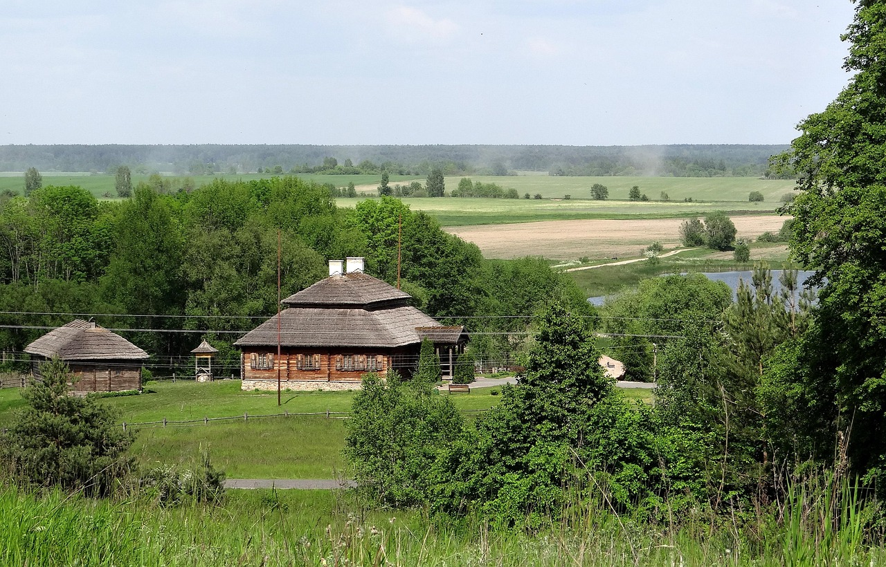
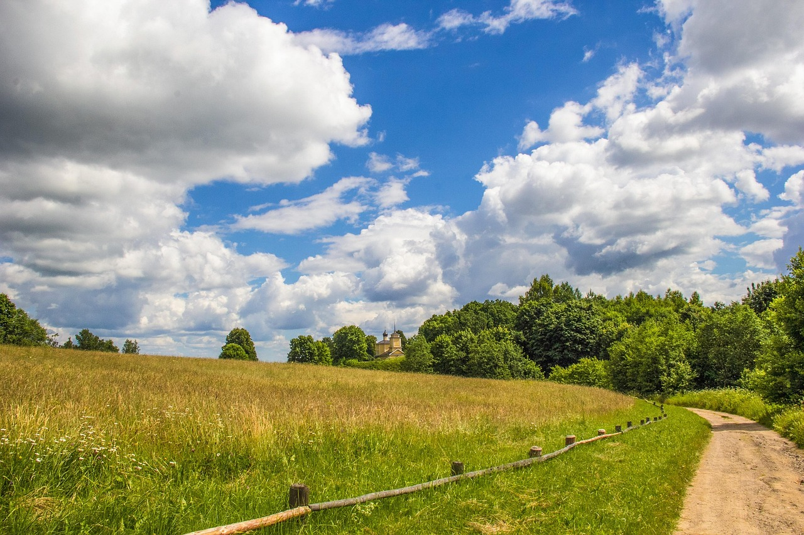

Главный объект

Русская усадьба XVIII–XIX веков представляет собой уникальный историко-культурный феномен, ставший средоточием культурной, светской и экономической жизни российского дворянства. Расцвет усадебного строительства начался после издания «Манифеста о вольности дворянства» в 1762 году, который освободил помещиков от обязательной службы и позволил им заняться обустройством родовых гнезд. Эти загородные комплексы гармонично сочетали в себе величественную архитектуру классицизма, живописные пейзажные парки и развитую систему ведения домашнего хозяйства.
Интересно, что многие провинциальные усадьбы только казались каменными, но на самом деле строились из дерева и штукатурились ради экономии и сохранения тепла. Внутри главных домов комнаты часто располагались в виде парадной анфилады, когда двери находились на одной оси, создавая сквозную перспективу для гостей. Кроме того, крупные имения обладали собственными крепостными театрами, оркестрами и оранжереями, где посреди зимы умудрялись выращивать экзотические ананасы и персики.
Историческая значимость русской усадьбы заключается в том, что она стала главной колыбелью для классической отечественной литературы, музыки и живописи. Именно в усадебной атмосфере черпали свое вдохновение такие великие творцы, как Александр Пушкин, Лев Толстой и Петр Чайковский. Сегодня сохранившиеся усадебные ансамбли служат важнейшими музеями-заповедниками, которые позволяют современникам прикоснуться к подлинному культурному наследию и укладу жизни ушедшей эпохи.
Галерея


Маршрут экскурсии по усадебному подворью
-
Усадебный двор
- Назначение:
- Хозяйственный центр имения, объединяющий жилые и подсобные постройки.
- Особенность устройства:
- Традиционно имел замкнутую или полуоткрытую форму для защиты скота и имущества от ветра.
-
Баня
- Расположение:
- Строилась в отдалении от жилого дома у самого водоема в целях пожарной безопасности.
- Главный элемент:
- Рубленый бревенчатый сруб с массивной печью-каменкой для получения сильного пара.
-
Амбар
- Функция:
- Основное усадебное хранилище для зерна, муки, ценного инвентаря и пищевых запасов.
- Конструкция:
- Возводился на деревянных или каменных опорах («ножках») для защиты урожая от сырости и грызунов.